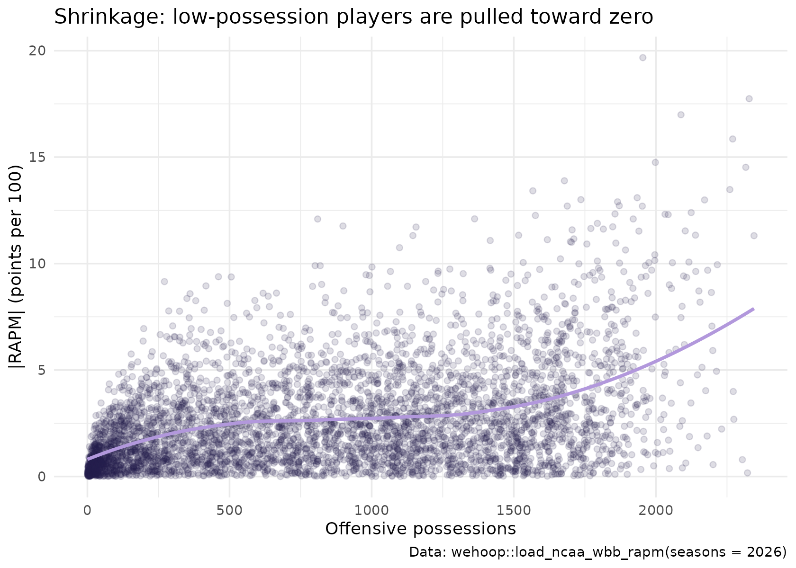
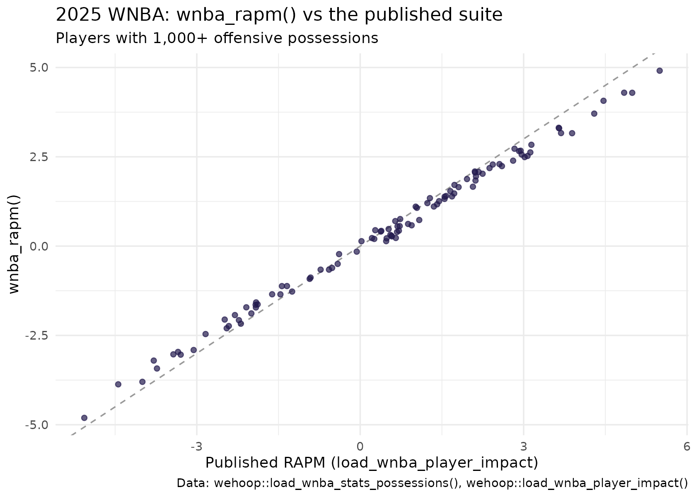

Women's College Basketball RAPM: League-Wide and Within-Team Player Impact
Saiem Gilani
Source:vignettes/articles/womens-college-basketball-rapm-model.Rmd
womens-college-basketball-rapm-model.RmdRegularized adjusted plus-minus (RAPM) estimates how many
points per 100 possessions a player adds to her team’s margin, holding
fixed the other nine players on the court. wehoop
publishes two RAPM estimates for NCAA Division I women’s basketball, and
they answer different questions. League-wide RAPM
(load_ncaa_wbb_rapm()) puts every Division I player on one
scale. Within-team RAPM (load_ncaa_wbb_rapm_within_team())
splits one team’s performance among its own players and cannot be
compared across teams.
This article explains both, how they are built, how they are checked,
and their limits. It condenses the official model card in the ncaa-wbb-hoops-data
repository; numbers quoted from that card are labelled as such. The
last section shows how to fit RAPM yourself on WNBA possessions with
wnba_rapm().
What the model estimates
Plain plus-minus credits a player with her team’s point margin while she is on the court. That rewards a bench player who happens to share the floor with the best starter. RAPM fixes this by estimating every player’s effect at once, so each player’s number is her effect with her teammates and opponents accounted for.
League-wide (load_ncaa_wbb_rapm()) |
Within-team (load_ncaa_wbb_rapm_within_team()) |
|
|---|---|---|
| Question | How much does this player add, on a scale shared by all of Division I? | How is this team’s performance divided among its players? |
| Fit | One ridge regression over every Division I possession in a season | One fit per team, on that team’s possessions |
| Comparable across teams | Yes | No, by construction |
| Columns |
orapm, drapm, rapm_net,
off_poss, def_poss, estimand
|
rapm_off, rapm_def, rapm_net,
team_off_poss, num_players
|
| Coverage | 2011 onward | 2010 onward |
In the league-wide file rapm_net is offense plus
defense, in points per 100 possessions, and a positive defensive value
is good; the within-team file signs defense the other way (see below). The estimand column
("league") is on every league-wide row so the two estimates
are never confused.
Loading the ratings
rapm <- load_ncaa_wbb_rapm(seasons = 2026)
nrow(rapm)
#> [1] 4596
count(rapm, estimand)
#> # A tibble: 1 × 2
#> estimand n
#> <chr> <int>
#> 1 league 4596The top of the 2025-26 season among players with at least 800 possessions, offense and defense combined (the floor the model card uses for its leaderboard):
rapm |>
filter(off_poss + def_poss >= 800) |>
arrange(desc(rapm_net)) |>
select(player, team, off_poss, orapm, drapm, rapm_net) |>
mutate(across(where(is.double), ~ round(.x, 2))) |>
head(15)
#> # A tibble: 15 × 6
#> player team off_poss orapm drapm rapm_net
#> <chr> <chr> <int> <dbl> <dbl> <dbl>
#> 1 SARAH.STRONG UConn 1954 11.2 8.44 19.7
#> 2 MADISON.BOOKER Texas 2328 8.53 9.21 17.7
#> 3 AZZI.FUDD UConn 2088 8.04 8.95 17.0
#> 4 JOYCE.EDWARDS South Carolina 2270 8.33 7.52 15.8
#> 5 GABRIELA.JAQUEZ UCLA 1998 8.72 6.03 14.8
#> 6 HANNAH.HIDALGO Notre Dame 2316 6.84 7.68 14.5
#> 7 MADINA.OKOT South Carolina 1678 8.93 4.96 13.9
#> 8 JORDAN.LEE Texas 2260 8.86 4.61 13.5
#> 9 MILAYSIA.FULWILEY LSU 1567 6.47 6.95 13.4
#> 10 ASHLYNN.SHADE UConn 1934 4.69 8.4 13.1
#> 11 AUBREY.GALVAN Vanderbilt 2171 9.87 3.12 13.0
#> 12 GIANNA.KNEEPKENS UCLA 1865 8.22 4.68 12.9
#> 13 CHARLISSE.LEGERWALKER UCLA 1871 7.7 5.02 12.7
#> 14 RAEGAN.BEERS Oklahoma 1688 7.15 5.55 12.7
#> 15 TESSA.JOHNSON South Carolina 1952 8.46 4.23 12.7Data: possessions, lineups and stints
RAPM needs to know who was on the court for every possession. The
NCAA engine reconstructs that from stats.ncaa.org play-by-play by
tracking substitutions, and wehoop publishes each
layer:
-
load_ncaa_wbb_matchup_stints(): one row per stretch of play with the same ten players on the court, with the score at its start and end. -
load_ncaa_wbb_possessions(): one row per possession, with both lineups and the points scored. -
load_ncaa_wbb_lineups(): lineup-level summaries.
stints <- load_ncaa_wbb_matchup_stints(seasons = 2026)
nrow(stints)
#> [1] 208582
stints |>
select(home, away, period, duration_seconds, n_possessions,
home_lineup, home_pts, away_pts) |>
head(3)
#> # A tibble: 3 × 8
#> home away period duration_seconds n_possessions home_lineup home_pts
#> <chr> <chr> <int> <int> <int> <chr> <int>
#> 1 George Washi… Dist… 1 262 14 EMMA.THEOD… 13
#> 2 George Washi… Dist… 1 66 4 EMMA.THEOD… 2
#> 3 George Washi… Dist… 1 45 4 CAIA.LOVIN… 5
#> # ℹ 1 more variable: away_pts <int>As reported in the model card, the inputs are the published possessions, team rosters and a name-change table that keeps a player in one column across transfers and spelling variants. Seasons whose usable-possession share falls below a gate are excluded; 2010 fails it, which is why league-wide RAPM starts in 2011. The card reports between about 76% and 80% of possessions usable in the early seasons.
How the model works
Each possession is one row of a regression. Each player has an offensive column and a defensive column, switched on when she is on the court for that side. The model also has an intercept (the league’s average points per 100 possessions) and a home-court term. The outcome is the points scored.
Ordinary least squares would fail: players who share most of their minutes are nearly impossible to separate, and players with a handful of possessions would get wild estimates. Ridge regression adds a penalty on the size of every coefficient, which shrinks players toward zero (league average) unless the data pull them away:
As reported in the model card, the league-wide fit uses , fixed by a validation program and checked at run time so a silently unregularized fit cannot publish. The card reports intercepts between about 87 and 93 points per 100 possessions and home-court advantage between about 2.4 and 2.8 points per 100 across seasons, and uses both as scale checks: a normalization bug moves them out of band even when the player ordering survives.
Shrinkage is visible in the published ratings: the fewer possessions a player has, the closer her estimate sits to zero.
ggplot(rapm, aes(off_poss, abs(rapm_net))) +
geom_point(alpha = 0.15, color = "#221A4D") +
geom_smooth(method = "loess", se = FALSE, color = "#b298dc", formula = y ~ x) +
labs(
title = "Shrinkage: low-possession players are pulled toward zero",
x = "Offensive possessions", y = "|RAPM| (points per 100)",
caption = "Data: wehoop::load_ncaa_wbb_rapm(seasons = 2026)"
) +
theme_minimal()
Uncertainty
The model card describes ridge posterior standard errors for every
player (orapm_se, drapm_se,
rapm_net_se) and a split-half calibration check: the
season’s games are split in two, both halves are refit, and each
player’s two estimates are compared with the standard errors. As
reported in the card, the published (posterior) standard errors are
conservative by about 2.5 times relative to how much an estimate moves
between two halves of a season, and a typical player’s standard error is
about 4 points per 100. The card’s advice: read rapm_net
plus or minus two standard errors as a cautious band, and treat
overlapping bands as a tier, not a ranking.
At the time this page was built the release file that
load_ncaa_wbb_rapm() reads did not include the standard
error columns (the result above is empty when they are absent). The
practical point stands either way: at roughly 4 points per 100 of
uncertainty, the top of any RAPM leaderboard is a group of players, not
an order.
Within-team RAPM
Within-team RAPM fits each team separately. It answers “who drives this team’s results” rather than “who is best in the country”.
within <- load_ncaa_wbb_rapm_within_team(seasons = 2026)
within |>
filter(team == "UConn") |>
arrange(desc(rapm_net)) |>
select(team, player_code, rapm_off, rapm_def, rapm_net, team_off_poss, num_players) |>
mutate(across(where(is.double), ~ round(.x, 2))) |>
head(8)
#> # A tibble: 8 × 7
#> team player_code rapm_off rapm_def rapm_net team_off_poss num_players
#> <chr> <chr> <dbl> <dbl> <dbl> <dbl> <int>
#> 1 UConn Fudd, Azzi 6.17 -6.17 12.3 2472 12
#> 2 UConn Arnold, KK 4.63 -4.43 9.06 2472 12
#> 3 UConn Shade, Ashlynn 3.02 -4.33 7.34 2472 12
#> 4 UConn Heckel, Kayleigh 4.11 -2.09 6.2 2472 12
#> 5 UConn Strong, Sarah 4.43 -1.68 6.11 2472 12
#> 6 UConn Ziebell, Allie 4.52 -1.59 6.11 2472 12
#> 7 UConn Quinonez, Blanca 1.99 -3.94 5.93 2472 12
#> 8 UConn Ducharme, Caroline 2.45 -1.61 4.06 2472 12Mind the defensive sign. The two files use different
conventions. In the league-wide file a positive drapm is
good and rapm_net = orapm + drapm. In the within-team file
rapm_def is measured in points allowed, so a
negative value is good and
rapm_net = rapm_off - rapm_def. Check it on the data before
combining them:
c(
league_net_is_o_plus_d = isTRUE(all.equal(rapm$rapm_net, rapm$orapm + rapm$drapm,
tolerance = 1e-6)),
within_net_is_o_minus_d = isTRUE(all.equal(within$rapm_net, within$rapm_off - within$rapm_def,
tolerance = 1e-6))
)
#> league_net_is_o_plus_d within_net_is_o_minus_d
#> TRUE TRUEComparing the two net estimates for the same players:
stopifnot(identical(class(rapm$player_id), class(within$player_id)))
both <- inner_join(
rapm |> select(player_id, league_net = rapm_net, off_poss, def_poss),
within |> select(player_id, within_net = rapm_net),
by = "player_id"
)
both |>
filter(off_poss + def_poss >= 800) |>
summarise(players = n(), correlation = cor(league_net, within_net))
#> # A tibble: 1 × 2
#> players correlation
#> <int> <dbl>
#> 1 3162 0.845They agree broadly but not exactly. A player on a deep team shares credit with good teammates in the within-team fit, while the league-wide fit also credits her for how her team performs against the rest of Division I. Use within-team RAPM to compare teammates, and league-wide RAPM for everything else.
How well does it work?
As reported in the model card, the league-wide model is gated before publishing on every season:
- the usable-possession share must be at least 0.65;
- the intercept must sit in an 83 to 98 band, and home-court advantage in a 1 to 4 band, per 100 possessions;
- the standard error checks must pass (standard errors fall as possessions rise, and the split-half calibration coverage stays in band).
Externally, a team’s possession-weighted average of its players’ RAPM is compared with Bart Torvik’s adjusted efficiency margin. As reported in the card, the rank correlation (Spearman) is about 0.98 for 2023 through 2026 and 0.90 for 2021; Torvik has no women’s ratings before 2021, so earlier seasons carry no external check. This validates the team-level aggregate, not the ordering of individual players.
Fit your own WNBA RAPM with wnba_rapm()
wehoop exports a ridge RAPM you can run yourself.
wnba_rapm() takes any possession table with
off_player_1 to off_player_5,
def_player_1 to def_player_5 (player ids) and
points, and returns one row per player with
o_rapm, d_rapm, rapm,
off_poss and def_poss. Under the hood it:
- builds a sparse design with one offensive and one defensive indicator column per player, dropping possessions with an incomplete lineup;
- fits a ridge regression with
glmnet, an unpenalized intercept (so the ratings are relative to average) and the same penalty on every player’s coefficient (standardize = FALSE), choosing the penalty by 10-fold cross-validation with fixed, deterministic folds, so repeated calls give identical results without setting a seed; - multiplies by 100 and flips the sign of the defensive coefficient so that good defense is positive.
It needs the glmnet and Matrix packages.
The function’s documentation notes that a full season of possessions is
needed for stable estimates; a single game is for illustration only.
load_wnba_stats_possessions() publishes WNBA possessions
with lineups from a GitHub release, so a full season fits in seconds
without calling the WNBA Stats API:
poss <- load_wnba_stats_possessions(seasons = 2025) |>
# regular-season WNBA Stats game ids start with "102"
filter(substr(game_id, 1, 3) == "102", count_as_possession == TRUE)
nrow(poss)
#> [1] 44528
my_rapm <- wnba_rapm(poss)
nrow(my_rapm)
#> [1] 181How close is this to the published suite, which uses its own penalty
and design? Compare with the regular-season RAPM in
load_wnba_player_impact():
published <- load_wnba_player_impact(seasons = 2025) |>
filter(season_type == "Regular Season") |>
select(player_id, player_name, pub_rapm = rapm, pub_o = o_rapm, pub_d = d_rapm)
stopifnot(identical(class(my_rapm$player_id), class(published$player_id)))
compare <- inner_join(my_rapm, published, by = "player_id") |>
filter(off_poss >= 1000)
compare |>
summarise(
players = n(),
r_offense = cor(o_rapm, pub_o),
r_defense = cor(d_rapm, pub_d),
r_total = cor(rapm, pub_rapm),
sd_wnba_rapm = sd(rapm),
sd_published = sd(pub_rapm)
)
#> # A tibble: 1 × 6
#> players r_offense r_defense r_total sd_wnba_rapm sd_published
#> <int> <dbl> <dbl> <dbl> <dbl> <dbl>
#> 1 102 0.998 0.997 0.998 2.06 2.31
ggplot(compare, aes(pub_rapm, rapm)) +
geom_abline(linetype = "dashed", color = "grey60") +
geom_point(alpha = 0.7, color = "#221A4D") +
labs(
title = "2025 WNBA: wnba_rapm() vs the published suite",
subtitle = "Players with 1,000+ offensive possessions",
x = "Published RAPM (load_wnba_player_impact)", y = "wnba_rapm()",
caption = "Data: wehoop::load_wnba_stats_possessions(), wehoop::load_wnba_player_impact()"
) +
theme_minimal()
For regular-rotation players the two rank players very similarly.
Compare the two standard deviations above for the difference in spread:
the cross-validated penalty in wnba_rapm() is chosen per
fit, while the suite uses its own settings, and a stronger penalty pulls
every estimate closer to zero.
To build possessions for a single game yourself,
wnba_possession_lineups() calls the WNBA Stats API
play-by-play (with on-court players) and returns the same possession
layout. It is a live call to stats.wnba.com, so it is not run here.
one_game <- wnba_possession_lineups(game_id = "1022500001")
wnba_rapm(one_game) # illustration only: one game is far too smallLimitations
- Shrinkage is a choice. Low-possession players sit near zero because the model knows little about them, not because they are average. Filter on possessions before ranking.
- Collinearity. Players who share nearly all their minutes cannot be separated by the data; the penalty decides how their joint effect is split.
- Team-level validation only. The external check against Torvik validates the team aggregate. There is no public benchmark for individual women’s college RAPM.
- Within-team RAPM is not comparable across teams, and as reported in the card it is produced by a manual step that needs the raw play-by-play bundles.
- Not yet in the published model, as reported in the card: multi-season pooling and a box score prior, both measured in development, and a luck adjustment for three-point shooting.
Where to go next
- WNBA player impact: RAPM plus SPM, BPM, WAR and projections for the WNBA.
- Women’s college player value: box plus-minus, the stable counterpart to RAPM.
- Women’s college team ratings: opponent-adjusted team efficiency.
- Advanced metrics: possessions and ratings from box scores.
- The NCAA play-by-play engine loaders in the function reference.